|
mtb-pmbus 1.2.0.1772
|

|
|
mtb-pmbus 1.2.0.1772
|
|
This section describes how to verify that the PMBus controller device is working correctly.
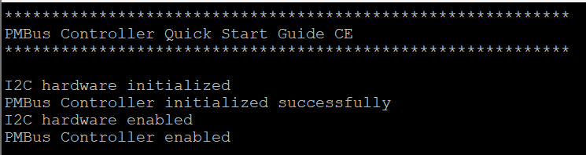
Check the terminal output for the transfer completion status.
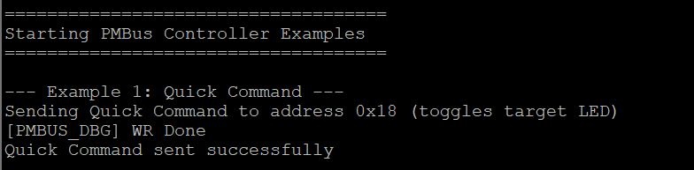
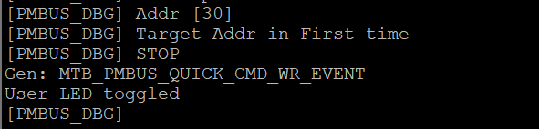
Observe the terminal output showing the read data and counter value.
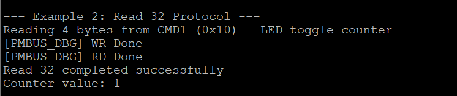
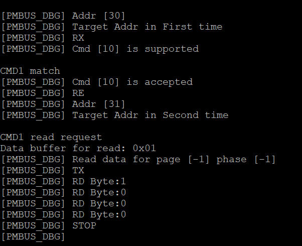
The controller will send PAGE command (0x00) with page number (0x01) using generic transfer API.
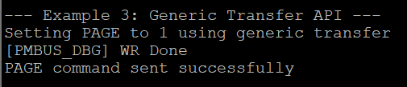
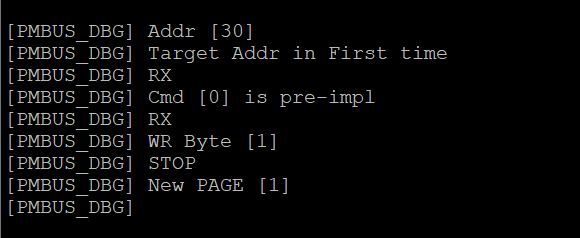
The controller will write 0xABCD to CMD2 (0x11) using Write Word protocol.
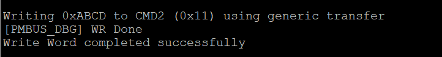
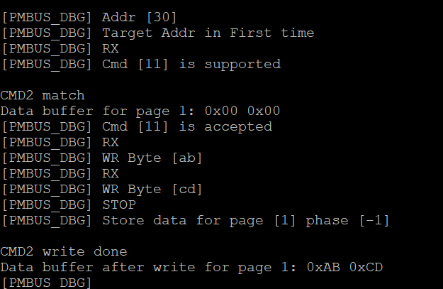
The controller will read data from CMD2 (0x11) using Read Word protocol.
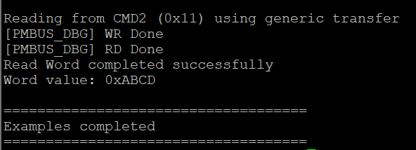
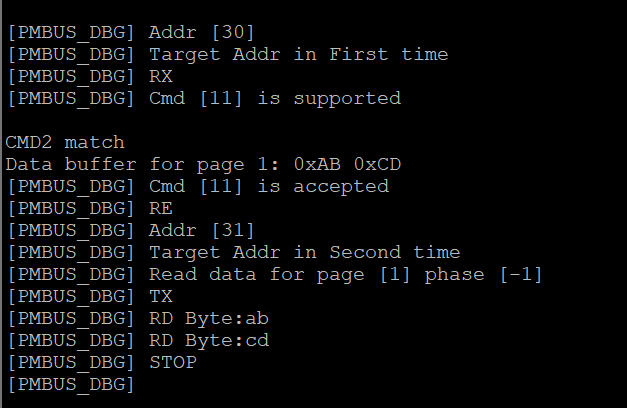